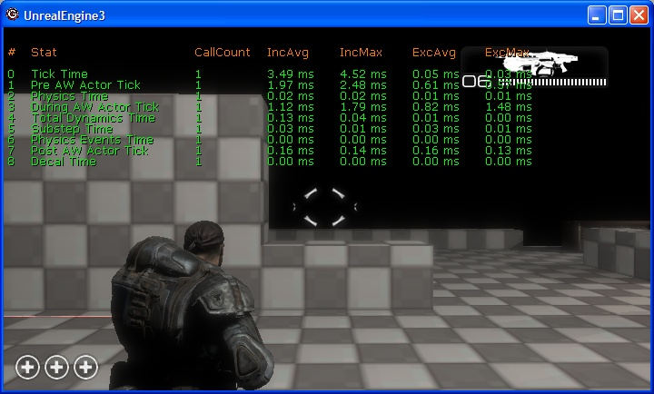

UDN
Search public documentation:
PerfStatsJP
English Translation
中国翻译
한국어
Interested in the Unreal Engine?
Visit the Unreal Technology site.
Looking for jobs and company info?
Check out the Epic games site.
Questions about support via UDN?
Contact the UDN Staff
中国翻译
한국어
Interested in the Unreal Engine?
Visit the Unreal Technology site.
Looking for jobs and company info?
Check out the Epic games site.
Questions about support via UDN?
Contact the UDN Staff
Unrealのパフォーマンス追跡システム
概要
In-game Stats (ゲーム内での統計)
 Stats (統計）を見る2番目の方法は、データの階層構造によってです。この方法は、統計データをツリー（木）構造で扱い、チャイルド（子供）のデータが、ペアレント（親）の合計時間に含まれます。例えば、全てのデータは、FrameTime （フレームタイム）という統計に含まれます。この方法で統計を見ることは、ある分野のパフォーマンスが悪いことがわかっていて、いったいその中のどこが問題を起こしているかを調べるのに役立ちます。情報を掘り起こし続けて、一番時間を使っている葉っぱを見つけることができます。デフォルトでは、統計データは包括的なタイミング情報を含みます。"stat exclusive" (排他的統計）のコンソールからのコマンドを使って、排他的時間を表示することもできます。これは、Stats の子供情報を含まない、使用時間を表示します。これは、いったいそのシーンの中のどこがパフォーマンス上の問題を起こしているかを把握するために重要なツールです。
Stats (統計）を見る2番目の方法は、データの階層構造によってです。この方法は、統計データをツリー（木）構造で扱い、チャイルド（子供）のデータが、ペアレント（親）の合計時間に含まれます。例えば、全てのデータは、FrameTime （フレームタイム）という統計に含まれます。この方法で統計を見ることは、ある分野のパフォーマンスが悪いことがわかっていて、いったいその中のどこが問題を起こしているかを調べるのに役立ちます。情報を掘り起こし続けて、一番時間を使っている葉っぱを見つけることができます。デフォルトでは、統計データは包括的なタイミング情報を含みます。"stat exclusive" (排他的統計）のコンソールからのコマンドを使って、排他的時間を表示することもできます。これは、Stats の子供情報を含まない、使用時間を表示します。これは、いったいそのシーンの中のどこがパフォーマンス上の問題を起こしているかを把握するために重要なツールです。

それぞれの列の意味
| 列名(column) | 意味 |
| # | hierarchical mode (階層構造モード）のときに、統計の階層を移動するのに使用 |
| CallCount | そのフレームの中でその統計が更新された回数 |
| IncAvg | 最近の数フレームにおいて統計的に使用された包括的平均時間 |
| IncMax | 最近の数フレームにおいて Stats によって使われた最長時間 |
| ExcAvg | 子供 Stats を除いて最近の数フレームにおいてStats によって使われた平均時間 |
| ExcMax | 子供 Stats を除いて最近の数フレームにおいてStats によって使われた最長時間 |
| コマンド | 結果 |
| inclusive | Inclusive state（包括的状態)をトグルします。True （真）であれば包括的時間を表示します。 |
| exclusive | Exclusive state（排他的状態)をトグルします。True （真）であれば排他括的時間を表示します。 |
| cycles | cycle counter state（サイクルカウンターの状態)をトグルします。True （真）であればサイクルカウンターの統計を表示します。 |
| counters | counter state（カウンターの状態)をトグルします。True （真）であればカウンターの統計を表示します。 |
| grouped | レンダリングモードをグループビューモードに変更します。すでにグループモードになっている場合には、レンダリングを不可にします。 |
| hier | レンダリングモードを hierarchical view mode (階層構造ビューモード、グラフモードとも呼ばれる）に変更します。すでにhierarchical mode になっている場合には、レンダリングを不可にします。 |
| nav "StatNum" | コール グラフの階層構造を上ったり下がったりして、そのときの統計の選択を変更します。 |
| color "Item" "Color" | 特定のアイテムがレンダリングされている色を変更します。 |
| list groups | stat groups の名前を全てログに落とします。showlog を使うと見ることができます。 |
| list group "GroupName" | その名前のグループの中の統計の名前を全てログに落とします。showlog を使うと見ることができます。 |
| name "StatName" | 個々の Stat に関してレンダリングのフラッグをトグルします。True であれば Stat は所属するグループ名でレンダリングされます。 |
| none | 全てのグループの Stat レンダリングをオフにします。 |
| "GroupName" | そのグループのレンダリングのフラッグをトグルします。True であれば そのグループはレンダリングされます。 |
Stats （統計）の記録
Stats システムのこのバージョンは、"stats provider" （統計提供者）のフレームワーク（枠組み）を含みます。このフレームワークは Stats データを収集し、何らかの外部ストーレッジ（保存媒体）に送ります。 それぞれのフレームの終わりで、レジスターされたプロバイダーのりストにデータのスナップショットが送られます。このデータはディスクに書き込むことも、ネットワーク上のどこかに送ることも、別のAPI システムに組み込む事などができます。 Epic フレーム毎の stats のデータのファイルやネットワークを介しての記録をサポートしています。Stats をファイルを使ってログの記録をする。
このバージョンの Stats システムはファイルへのデータの記録をサポートします。システムは2種類のフォーマットで書き込めます：１つはExcel のなかへインポートできるCSVで、もう１つは stats viewerで使われている XML のフォーマットです。CSV ふぉーまっとは前に行ったデータキャプチャの結果と素早く比べるのに便利です。そして、Excel の持つ図にして現すなどの機能が全て使えます。XML フォーマットは主に後で検討するためにデータをキャプチャするために使われます。XML フォーマットは stats viewer の元来のフォーマットであるため、単にXML ファイルをロードして、その統計データを見ることができます。nネットワークされた Stats
最新のバージョンではネットワークを介して Stats （統計）データを集めることができます。前にはできませんでしたが、今は専門のサーバーに統計データを集めることができます。UDP を介して Stats を集めて、われわれがサポートする様々なOSやコンソール上で機能します。Xbox 360 では PIX ツール を使ってstats をキャプチャすることもできます。Stats の記録法の設定
MyGameEngine.ini の中の設定で Stats プロバイダーが可能化されます。 それぞれのプロバイダーは名前を与えられ、その名前を使ってINI ファイルの設定データがチェックされます。例えば、XML ファイルによる stats の記録を可能にするためには Engine.ini ファイルの中に下記のように書かれていることが必要です：[StatNotifyProviders] XmlStatNotifyProvider=true下記に記されているのは、 Epic がそのデフォルトの設定で提供しているプロバイダー全てのリストです。
[StatNotifyProviders] XmlStatNotifyProvider=false CsvStatNotifyProvider=false StatsNotifyProvider_UDP=true PIXNamedCounterProvider=falseStats のプロバイダーをコマンドラインから有効にすることもできます。これはプロバイダーの名前をパラメタ（引数）として使って行われます： utgame ons-testmap ?CsvStatsNotifyProvider 上記によって、Stats がコンマで分けられる形で、utgame_stats.csv に書き込まれます。
Stats Viewer （統計ビュアー）
データの収集
この viewer はファイルに記録する際に保存された既存のファイルを見る為に使われます（ファイルへの記録に関する前のセクションをご覧ください）。その他に、作動しているゲームに接続して、Stats 情報をネットワークを介して収集することもできます。ネットワークを介して収集されたデータも、保存して後から検討することができます。存在する Stats ファイルを開く
[ファイル]を| [開く] メニューオプションを選択して、あなたのゲームのログディレクトリーに進んでください。Stats の記録手段は全て game's log （ゲームのログ）ディレクトリにファイルを書き込みます。リモートゲームへの接続
接続 | へ接続メニューオプションは下のダイアログを展開します。このダイアログは作成時に、全てのゲームにアナウンスメッセージをブロードキャストします。[リフレッシュ] ボタンは同じメッセージを再放送します。このブロードキャストは両方とも、ダイアログボックスで指定されたポートで行われます。もし複数のゲームチームがある場合や、一連のサーバを隔離したい場合は、どのポートからゲームが情報を得るかを変更できます。接続を簡単にするために、ダイアログは、作動しているゲームのタイプと、どのプラットフォーム上で行われているかのリストを表示します。下の図では、私は自分のパソコンでUTバージョンのエディタを使い、同じパソコンで Onslaught ゲームを、そしてわたしの Xbox 360 で Gears of War を作動させています。ダイアログにリストされたゲームの Stats データを収集するためには、目的のゲームをダブルクリックするか、選択した後で、[接続]ボタンを押してください。
データを見る
下の図は、ネットワークを介して、大量のデータを収集した後、保存したファイルを開けたときの例です。このビューでは、2つのカウンター、 FrameTime と SkelCompose をグラフ表示に追加しました。線を識別しやすいように、選択された Stat はいつもボルド（太字）で描かれています。このエリアは150フレーム分のデータを表示しています。それぞれの Stat は独自の色で表され、グラフの下のリストの中で特定の Stat をダブルクリックすることで色が変えられます。バックグラウンドの色も同様に変えられます。どれかの Stat を 表示から除きたい場合には、その Stat を選択して、[Delete] （削除）キーを押します。
グラフに Stat を追加する
グラフに Stats を追加するには、ツリービューから個々の Stat をグラフのエリアにドラッグするか、 Stats のグループをグループごとドラッグしてください。グループをグラフエリアにドラッグすると、その中の全ての Stats を表示に追加します。集積データ（統計計算値）
リストビューの中で、集積されたタイプのデータが表示されています。その統計の平均値、最大値と最小値です。デフォルトでは、これらの値はデータセット全体から計算されます。つまり、全てのフレームを含んでいます。一連のフレームからだけのデータによる計算値をご覧になりたい場合には、[View]（ビュー） | [Ranged Aggregate Data] （集積データを範囲で扱う）を選択してください。範囲を指定してみる場合には、セット内をスクロールするに応じてデータが更新されます。ビューエリアをズームする
X 軸の拡大縮小は、[F1] (View | Zoom In（ビュー、ズームイン）) と [F2] (View | Zoom Out（ビュー、ズームアウト）) キーを使って行えます。これによって、表示されるフレーム数が減少したり増加したりします。Y 軸の拡大縮小は個々の Stat ごとに行われます。ネットワークでデータを収集しているときの自動スクロール
リモートゲームに接続しているとき、グラフ表示は、自動的に最新のデータまでスクロールします。[F3] (View | Auto-scroll Display （自動スクロールによる表示）) キーを使ってこれをトグルすることができます。コール グラフ ビュー
どのフレームのコールグラフも、 Stats のグラフエリアの中のそのフレーム上で右クリックし、[View Frame N] （N フレームの表示）オプションを選択することで見ることができます。こうすると、 下のように、Stats のコールグラフをツリー状に表示するウィンドウが立ち上がります。 フレームをクリックしての選択は厳密性にかけるため、周りのフレームも一緒に選択してビューに追加してします。これは、Stats をドリルダウンして、フレーム間の比較が容易にできるため、スパイクをトラッキング（追跡）するのに便利です。全ての時間は inclusive times (包括的時間)として報告されています。
フレームをクリックしての選択は厳密性にかけるため、周りのフレームも一緒に選択してビューに追加してします。これは、Stats をドリルダウンして、フレーム間の比較が容易にできるため、スパイクをトラッキング（追跡）するのに便利です。全ての時間は inclusive times (包括的時間)として報告されています。